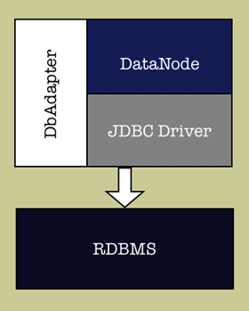

|
LOCAL DOCS
ONLINE RESOURCES |
| 4. Design
4.6 Cross-Database Issues JDBC specification was created by Sun to provide a uniform way of connecting to relational databases from the Java code. In theory this should allow Java developer to create database-aware code that is portable across RDBMS vendors. In reality this is only partially true. While providing universal connectivity, JDBC doesn't handle certain portability issues. The following problems remain when developing with JDBC:
This becomes even a bigger problem in a generic product like Cayenne that should support any database. Cayenne addresses this issue by providing a DbAdapter for each supported database engine. 4.6.1 DbAdapter Design Overview Each DataNode (as mentioned before, DataNode models a physical datasource) has an assocaited instance of DbAdapter. DbAdapter is delegated certain tasks. Here is a schematic representation of DataNode, DbAdapter and JDBC layer working together: Most common functions of DbAdapter are to:
A generic implementation of DbAdapter is JdbcAdapter. Database-specific implementations usually subclass JdbcAdapter. 4.6.2 Non-SQL Adapters. Since DbAdapter serves as a factory of DataNodes, it is possible to implement adapters to non-JDBC and even non-SQL data sources, such as XML feeds, LDAP, flat files, etc. 4.6.3 Porting Cayenne to a New RDBMS To Be Done... |
| Copyright ©2001-2004 ObjectStyle Group |